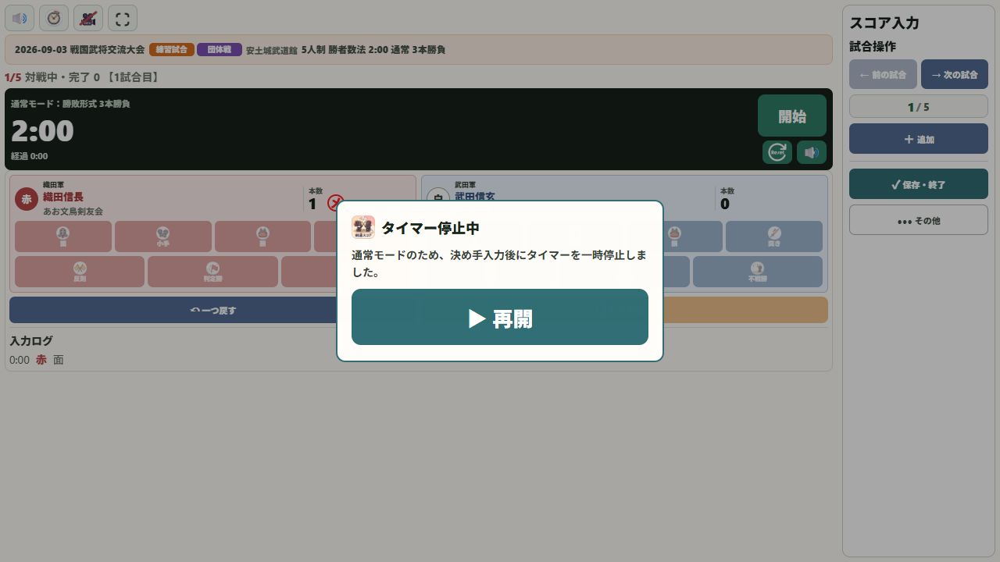
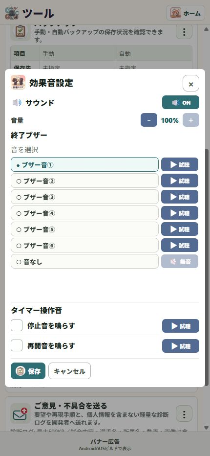

09 / 記録する
タイマーと終了ブザーを使う
通常モードでは、一本を入力した後に試合の進行を落ち着いて再開できます。
操作の入口試合設定 → 通常／流し ／ ツール → 効果音
モードを確認する
「通常」はタイマー実行中の一本入力で一時停止します。「流し」は一本ごとの同じ自動停止をせず、時間まで継続します。
一本の後に再開する
勝敗が未確定なら「タイマー停止中」の案内が出ます。試合再開に合わせて「再開」を押します。案内中はスコア入力も一時停止します。
ブザーを選ぶ
「ツール」→「効果音」から終了ブザーの種類・音量を設定します。「音なし」とON/OFFの状態も確認します。
会場で音を確認する
停止音・再開音も設定できます。試合前に試聴し、端末のメディア音量を確認します。



